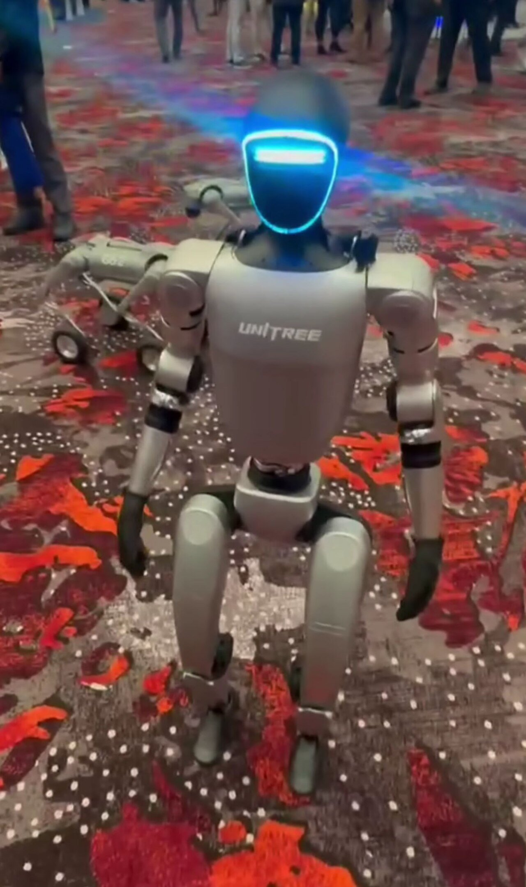
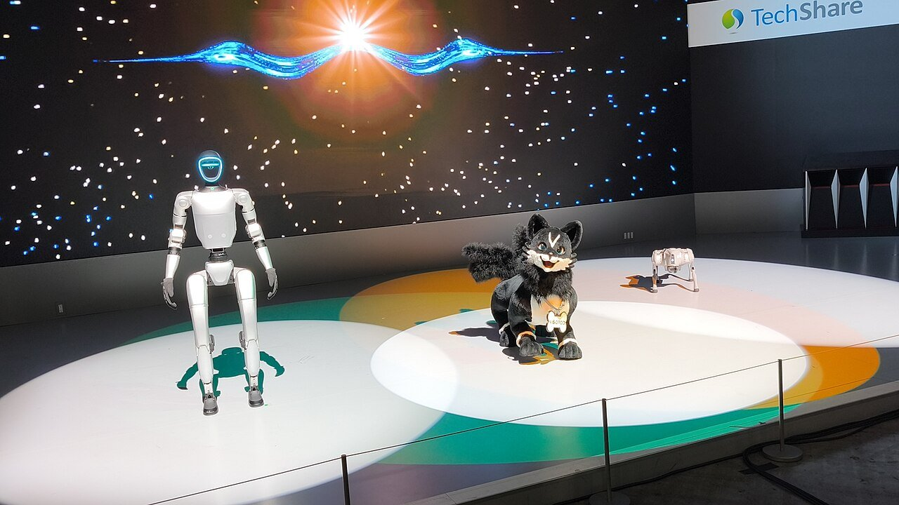
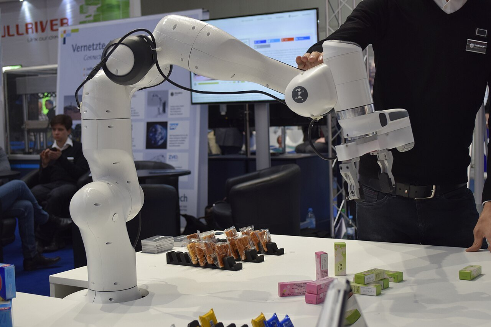
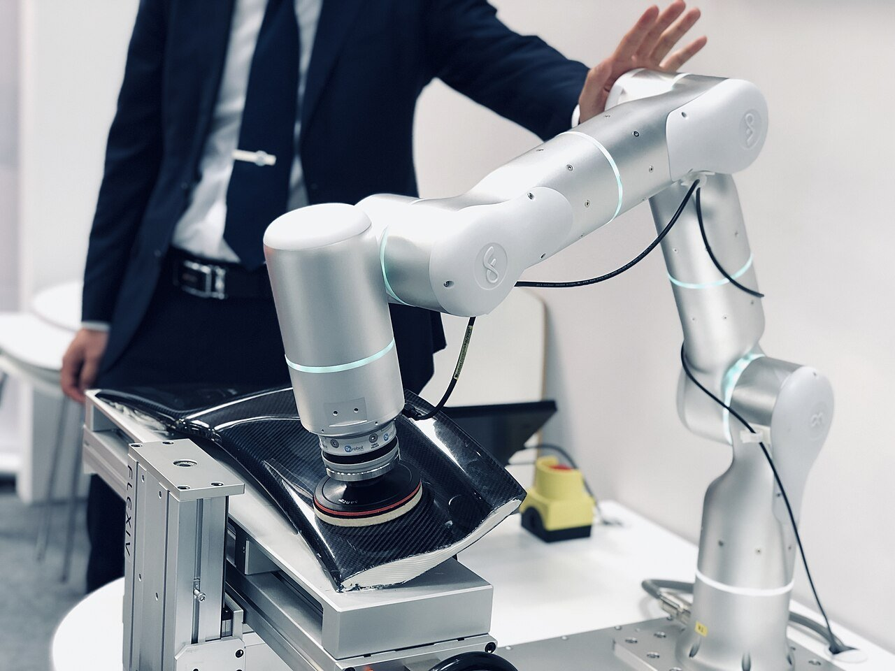
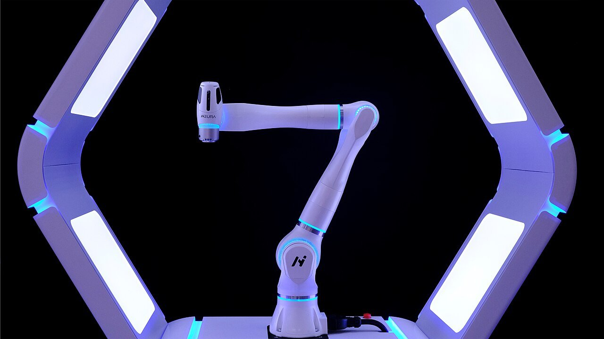

Matthew WnukStaff Embodied AI Engineer, Qualcomm
Matthew WnukStaff Embodied AI Engineer, Qualcomm
I build the models that make robots work in the physical world.
I work on foundation models for humanoids and robot arms: policies that see, predict, and act, and that run on the robot's own hardware. Before robots it was a decade of machine learning for cars, shelf cameras, warehouses, and radios.

Robots I work with




Photos from Wikimedia Commons: Unitree G1 by Sayanesy (CC0); Unitree on stage by RuinDig/Yuki Uchida (CC BY 4.0); Franka by Ims (CC BY-SA 4.0); Flexiv Rizon by MichelleACipriano (CC BY-SA 4.0); MAiRA by Anna Schneider2021 (CC BY-SA 4.0).


Selected work

Qualcomm · Staff Embodied AI Engineer · 2026 to present
World-Action Models for Robot Manipulation
Robot foundation models that predict future video and robot actions together, from multi-robot data to on-device control.

Symbotic · Senior Software Engineer, ML and Perception · 2023 to 2026
CaseID: SKU Identification for Warehouse Automation
Identifying the SKU of every case a warehouse robot handles, with the whole pipeline running onboard the robot.

Modern Intelligence · Senior Machine Learning Engineer · 2022
Multimodal Retrieval for Maritime Awareness
Finding the same vessel across cameras, satellites, AIS, and text descriptions.

Sony Electronics · Staff Machine Learning Engineer · 2020 to 2022
Visual Speech Recognition (Lip Reading)
An in-car lip-reading system that keeps speech recognition working in noisy cabins.

Sony Electronics · Staff Machine Learning Engineer · 2020 to 2022
Retail Applications
Shelf-mounted cameras that identify products and flag gaps in stock, running on the edge.

SPAWAR and DARPA · Machine Learning Engineer · 2017 to 2019
RFMLS: Radio Frequency Machine Learning Systems
Bringing deep learning to radio signals: a benchmark dataset, hardware fingerprinting, and learned receiver control.
Experience
-
2026 to present
Staff Embodied AI Engineer
Qualcomm
Foundation models for humanoid and general-purpose robots: vision-language-action policies and world-action models, and their deployment on Qualcomm edge hardware.
-
2023 to 2026
Senior Software Engineer, ML and Perception
Symbotic
Tech lead for CaseID: image embedding with Vision Transformers for a large-scale production system, deployed on NVIDIA Jetson in an embedded ROS environment.
-
2022
Senior Machine Learning Engineer
Modern Intelligence
A custom multimodal re-identification system for maritime awareness.
-
2020 to 2022
Staff Machine Learning Engineer
Sony Electronics
Tech lead for visual speech recognition; senior engineer on embedded product recognition for retail.
-
2016 to 2020
Machine Learning Engineer
SPAWAR
Lead engineer on DARPA's Radio Frequency Machine Learning Systems program; tech lead on machine learning for self defense; machine learning trainer.
-
2016 to 2018
MS, Electrical Engineering
UC San Diego
Research on lidar SLAM and sensor fusion for an embedded drone platform.
-
2011 to 2015
BS, Electrical Engineering
San Diego State University
President of Eta Kappa Nu; first-place team at the 2015 AUVSI RoboSub competition; internships at NASA Langley and Northrop Grumman.
-
2004 to 2013
Sonar Technician
United States Navy
Nine years of service around the world.
Patents
Certifications and honors
- NVIDIA-Certified: Generative AI LLMs
- NVIDIA-Certified: Generative AI Multimodal
- MIT Professional Education
- Eta Kappa Nu and Tau Beta Pi